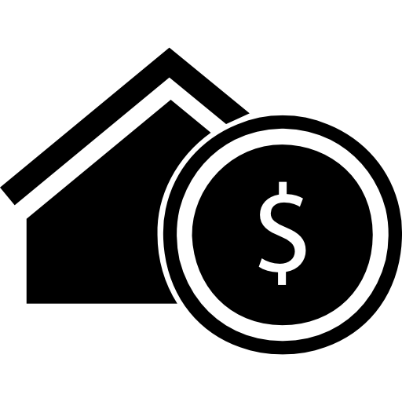

|
 |
|
|
Environmental, Social and Governance (ESG). Selo que indica o compromisso das empresas com os impactos do seu negócio tanto no meio ambiente quanto na sociedade, além de sinalizar que os seus processos de administração são responsáveis. |
Renda variável são aqueles cujo retorno é imprevisível no momento do investimento. O valor varia conforme as condições do mercado e, consequentemente, a remuneração que as aplicações oferecem segue esse mesmo princípio. |
Soluções para produtores, cooperativas e negociantes se protegerem da oscilação de preços das commodities (boi, soja, milho, café, etanol...) Para exportadores, opções de hedge cambial. |
|  |  |
|
| Renda fixa é um investimento onde você empresta dinheiro a uma instituição e recebe juros fixos ou variáveis em troca. É considerado mais seguro em comparação com ações e oferece previsibilidade nos retornos. Existem diversos tipos de títulos, como títulos do governo e corporativos. | Fundos Imobiliários (FIIs) permitem investir em ativos imobiliários, como imóveis comerciais, sem comprar propriedades físicas. Oferecem renda de aluguéis e potencial valorização, com liquidez e diversificação. | Investimentos privados envolvem comprar parte de empresas não públicas para lucrar com a valorização ou vendê-las posteriormente. |